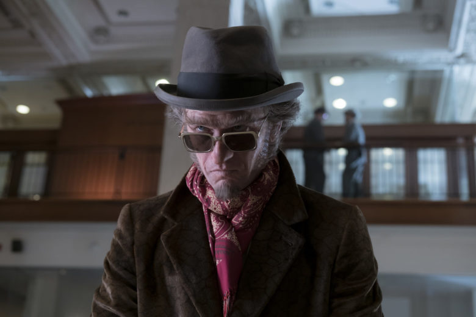
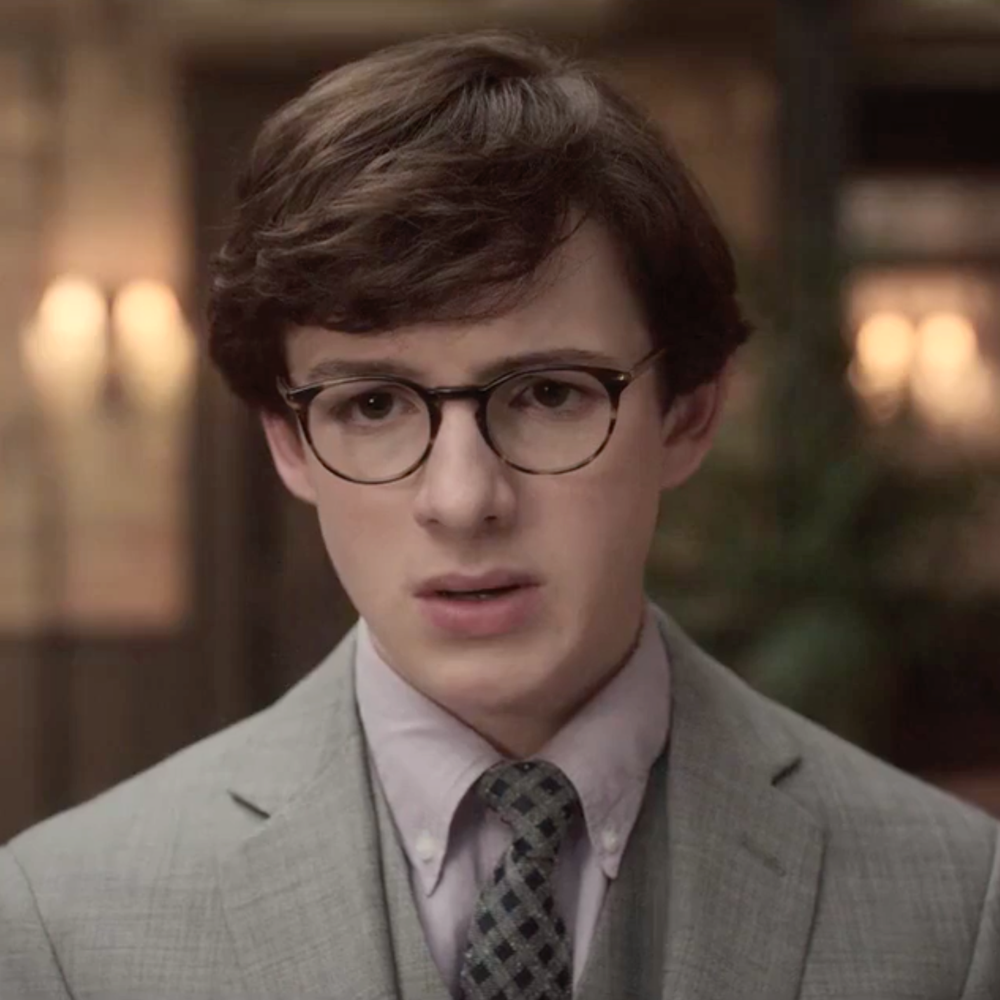

Es el villano principal de la saga A Series of Unfortunate Events de Lemony Snicket. Es sucio, cruel, sin escrúpulos y descuidado. Interpretado por Neil Patrick Harris, es un actor, cantante, mago, escritor, comediante y director estadounidense. Los papeles más destacados de su carrera incluyen el papel principal en Doogie Howser, M. D., el de Barney Stinson en How I Met Your Mother, una versión novelada de sí mismo en la trilogía Harold y Kumar y el papel protagonista en la serie web musical de Joss Whedon Dr. Horrible's Sing-Along Blog.
Es uno de los personajes principales de la serie de libros infantiles Una serie de eventos desafortunados, de Lemony Snicket. Violet es la mayor de los huérfanos Baudelaire. Tiene un hermano menor llamado Klaus y una hermana bebé llamada Sunny. Violet es una gran inventora. Malina Opal Weissman es una actriz y modelo estadounidense, conocida por sus papeles como la joven April O'Neil en la película Tortugas Ninja y Violet Baudelaire en la serie de Netflix A Series of Unfortunate Events. Empezó su carrera como modelo a la edad de ocho años, siguiendo los pasos de su madre cuya agencia la descubrió. Interpretado por Malina weissman Apareció en importantes marcas de diseñadores como Clavin Klein, Ralph Louren,Levi´s, Benetton, DNKY, H&M, entre muchos otros. Como actriz apareció en anuncios comerciales para ACT Mouthwash, MAybelline, Purell yMy little pony
Hizo su debut en la gran pantalla en 2014 como la versión joven del personaje de April O´neil en la película de ciencia ficción Tortugas ninjas, interpretada como adulta por Megan Fox. En 2015, Malina apareció en la serie de CBS y Warner bros, telvision supergirl como Kara zor -El, actuada como un adulto por Mellisa Benoit. En 2016, Malina apareció en la película Thirsty, y tuvo la función significativa de Rebecca Brand en la comedia Nine lives, también protagonizado por Kevin Spacey y Jeniffer Garner, la cual fue estrenada en agosto de 2016. En 2017, Malina protagonizó a Violet Baudelaire en la serie de Netflix: Una serie de eventos desafortundados.

Es uno de los personajes centrales en la popular serie de libros Una serie de eventos desafortunados de Lemony Snicket. De los huérfanos Baudelaire Klaus es el segundo: tiene una hermana mayor llamada Violet y una hermana bebé menor, Sunny. Klaus es un ávido lector con una memoria fotográfica. Interpretado por Louis Hynes es un actor inglés conocido principalmente por su interpretación de Klaus Baudelaire en la serie de televisión A Series of Unfortunate Events. Interpretado principalmente por Louis Hynes es un actor inglés conocido principalmente por su interpretación de Klaus Baudelaire en la serie de televisión A Series of Unfortunate Events.
Es la menor de los huérfanos Baudelaire en los libros infantiles de Una serie de eventos desafortunados, junto con sus hermanos Klaus y su hermana Violet. Ella es demasiado joven para hablar, pero sus ruidos de bebé son traducidos por el narrador Lemony Snicket. Interpretada por Presley Smith, Actriz conocida por su papel de Sunny Baudelaire en la adaptación de Netflix, Cuando la serie estaba a punto de ser lanzada por Netflix, ella estaba a punto de cumplir 2 años de edad. Fue considerada como una estrella de la actuación en un artículo de la revista Glamour online en el 2017.Es de Vancouver, Canadá.
Es uno de los personajes de ficción de la serie de libros A Series of Unfortunate Events de Lemony Snicket. En la película Lemony Snicket's A Series of Unfortunate Events fue personificado por Timothy Spall. Es el banquero a cargo de los asuntos de los huérfanos Baudelaire. En serie adaptada de Netflix, el personaje fue personificado por K. Todd Freeman, Actor estadounidense. También ha aparecido en éxitos de taquilla como 2008 y en aclamadas producciones teatrales como The Song of Jacob Zulu. Asistió a la escuela secundaria para las artes escénicas y visuales en Houston, Texas. Se graduó en la Facultad de Artes de la Universidad de Carolina del Norte en 1987. Ganó un Drama Desk Award al Mejor Actor Destacado en una obra de teatro por su actuación en Airline Highway, del 2015.